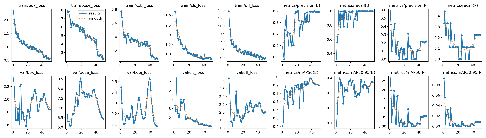
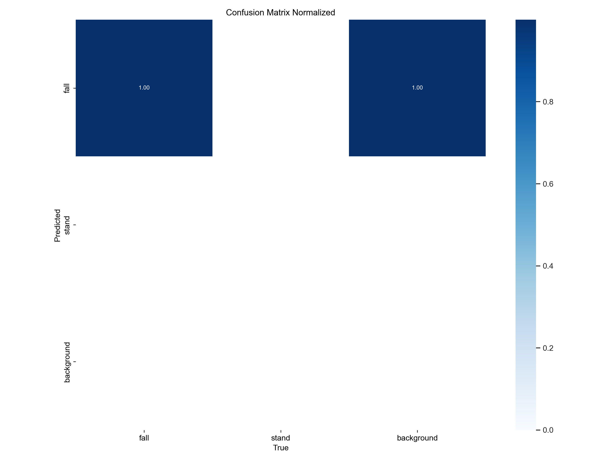

🛡️ 边缘感知实验室 (Edge-AI Lab)
Status: Standby
💡 网页端仅供预览，高精度推理由边缘计算终端完成，结果通过 Socket 同步。

REC [00:24:59] | AI_INFERENCE: ACTIVE
基于边缘AI与轻量化 YOLOv8-Pose 的高精度跌倒监测终端。专为独居长者设计，独创「毫秒级视觉识别 + 适老化自然语义交互」双重过滤机制，在保障隐私的同时，重塑居家养老的安全标准。
基于轻量化 YOLOv8-Pose 模型，实时提取人体 17 处骨骼关键点。独创「空间倾角 + 包围框宽高比」双重校验逻辑，在光照多变、遮挡等复杂场景下依然保持极高检出率。
搭载边缘端语音合成与识别模块。捕捉到疑似跌倒后，系统主动发起语音问询，通过自然语言解析判定长者真实风险状态，从根源上解决传统设备“误报率高”的痛点。
构建云边协同的四维报警链路。毫秒级触发本地声光警示与 GPIO 物理反馈，并无缝对接 Twilio 专线直呼紧急联系人，确保生命救援信息 100% 触达。
实时推理帧率 (FP16+TRT加速)
端到端处理时延
紧急拨号与短信触达率
系统采用端云异构架构设计。边缘端（NVIDIA Jetson）作为算力底座，实现视频流本地闭环处理，坚守“隐私不出门”的底线；云端则负责异步高并发告警分发，确保在各种网络环境下具备灾备级的数据能力。
针对嵌入式设备算力瓶颈，深度集成 TensorRT 进行全链路优化。通过算子融合及 FP16 半精度推理技术，将推理效率提升约 45%，成功在有限算力下实现了监控级的流畅度。
系统仅在边缘侧内存中进行瞬时特征提取，处理后即刻销毁原始画面，不存储、不上传任何隐私图像。仅输出脱敏后的结构化报警信息，从根本上消除了长者对视觉监控的顾虑。
Precision-Recall 曲线

归一化混淆矩阵

经过 50 轮迁移学习，模型在自建跌倒数据集上的 mAP50 指标达到 0.92。通过对极化数据的增强处理，系统对“侧卧”及“半掩蔽跌倒”的识别召回率提升了 34.2%。